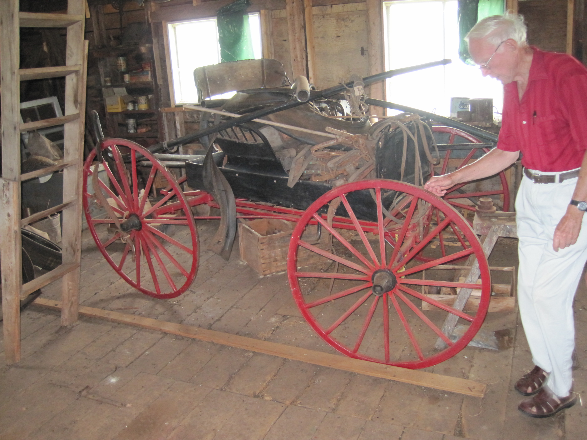

The Family Chronicle
No. 190 September 3, 2010

MacLaughlin driving wagon, early 1900’s
The wagon pictured above was found on the second floor of the Gill Carriage shop in Eliotvale, PEI. The wagon, although no nameplate was found, is believed to be manufactured by the MacLaughlin Company of Ontario (later the MacLaughlin Buick Motor Company) driving wagon. The wagon is owned by John Gill who, along with his father, was a carriage maker, ceasing the business sometime after WW2. The wagon belonged to Mr. Gill’s brother and, John recalls, was imported by his brother from Ontario in the 1920’s.
The wagon, pictured above, reminds me of our light driving wagon when I grew up. Some wagons had a solid back; ours, as I recall, had an open back like the one pictured above. Ours also had a hinged cover on the portion of the box behind the seat to keep parcels out of sight but also to keep them dry
Given the size of our family, for church, we usually traveled in an “express” wagon which would have been used commercially for delivering groceries and packages in towns and cities. It was a stronger/heavier wagon and had two seats.
In Memoriam
I found the following among my papers but have no idea how it came into my possession. It is hand written on a lined legal size page. At the bottom of the page is written, “Written by Betty MacNaughton”; I assume that it was written on the death of her father, Donald MacNaughton, (1874-1935). The writing reminds me of Aunt Kate Watling’s handwriting; she was a niece and a neighbour of Donald Macnaughton. and may well have transcribed a copy for my mother.
In Memoriam
In some far distant and celestial clime
He lives whom we held dear upon this earth
No veil of memory or hand of time
Can dim our recollections of his worth
The human qualities which he did wear
Could never pass away with mortal breath
They live as he must live some place somewhere
Unchanged in passing by the phase called Death.
He was a goodly neighbor to his friends
Responsive, midst his labors to their needs.
Unmindly of his own material ends,
And generous with his kindly words and deeds.
And we his children from our earliest days
Have recollections only bright and fair
His selflessness his quiet earnest ways
The way his voice led daily family prayer.
The simpler things of life were dear to him
An oft read book, a crackling brisk wood fire
The church he knew so well and served therein
The good old hymns, of these he’d never tire.
Now he is absent from the family group
The missing member, whom we’ll ever mourn
But when we grieve the most ads spirits droop
We know he’s wakened to a happier morn.
The good he did upon this lowly earth
Must lift him to the pinnacles of peace
We have no doubts as to his sure rebirth
The miracle of God can never cease.
A sweet and solemn thought that we shall meet
Where love and joy bloom brightly in God’s sight
And we shall gather round the Saviour’s feet
And dwell forever tin the realms of light.
Sayings
Many of our common sayings emerged from the rural way of life
With Bells On – farmers would put their best bells on their horses when going to church or a special event
Spinster – someone who spun wool, often an unmarried woman of the family
Nest egg- a piece of clay or stone usually whitewashed and put in a nest to encourage a hen to lay eggs
Bought the farm – originally applied to soldiers killed in war but now often means a person who has died
Spuds – potatoes were thought to be unhealthy; a Society for the Prevention of Unhealthy Diets (SPUD) thought potatoes to be unhealthy - and the name stuck.
Stumped was used to describe a stump too large for an oxen or horse
Upper case letters were kept in the upper shelves or cases in a print shop
The Family Chronicle (Copyright) is an occasional newsletter published by Don Glendenning and posted on the family website. It is intended to share information about my family, community and the times in which I grew up. While every effort is made to be accurate, errors are likely to occur. Comments, enquiries and information may be sent to 62 Queen Elizabeth Drive, Charlottetown, PEI, C1A 3A9. Tel: 902 892 5859. Email: don@glendenning.net Web: www.glendenning.net/don
Shank’s Mare
There were not many cars on Black River roads before WW2. Our car, a 1929 Model A 2-door sedan, was “up on blocks” in the wagon shed when I first recall it. The reason was simple; we were in the midst of a recession. Up-on-blocks means that all four wheels were lifted off the ground to ensure that it wouldn’t be driven, but it also to protec the vehicle from the cold and damp creeping up from the ground and ruining the tires.
There were five boys in the family; we had one bicycle, Walter’s, among us. We were glad when times improved and he was able to use the car. The next bicycle came to our house when John purchased one for me in 1945.
Schools were about four miles apart so many students walked two miles night and morning.
Elinor, Ken and Norman often walked to high school in Bay du Vin; later they traveled by horse. One would walk two miles or more to church Sunday morning only to walk back again in the evening for Young peoples meetings.
It was not unusual to walk a mile or more to the grocery store and carry groceries back with you; I know of people walking from the Branch to Loggieville, about 11 miles, but never did myself. Also, the men in the winter would walk for miles into the woods camp on Sunday afternoon and home again on Friday night or Saturday.
I cannot ever remember being driven, or picked up, to visit a friend in the community; you walked or you didn’t go.